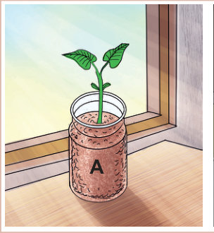
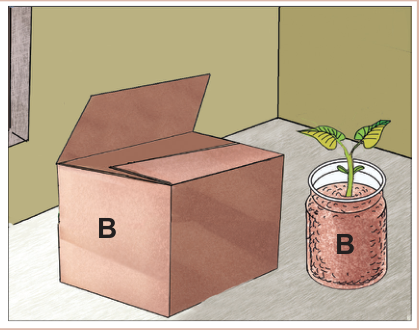

Kielelezo namba 3: Umuhimu wa mwanga kwa mimea
Matokeo:Je, kuna tofauti gani ya ukuaji wa mmea uliopo katika kopo A na ule wa kopo B?
Hitimisho:Andika hitimisho la jaribio ulilolifanya.
Jaribio la 4: Kuchunguza umuhimu wa hewa katika kuota kwa mbegu
Lengo:Kuonesha kuwa hewa ni muhimu katika kuota kwa mbegu
Vifaa:Pamba, chupa mbili, maji, mbegu za maharage, na mafuta ya kula
Hatua
- 1. Chukua chupa ya kwanza andika herufi A na chupa ya pili andika herufi B.Angalia Kielelezo namba 4.
- 2. Weka maji yasiyochemshwa kiasi cha mililita 150 (ml 150) kwenye chupa A.Weka kiasi hichohicho cha maji yaliyochemshwa na kupoa kwenye chupa B.
- 3. Weka mbegu kwenye pamba na tumbukiza kwenye chupa A.
- 4. Weka mbegu kwenye pamba za aina hiyohiyo tumbukiza kwenye chupa B.
- 5. Weka mafuta kidogo ndani ya chupa B, yaelee juu ya maji, kisha funika.
- 6. Chunguza mbegu kwenye chupa A na B baada ya wiki mbili.
- 7. Andika taarifa ya matokeo katika uchunguzi wako.
SAYANSI MEMKWA 2.indd 90
21/08/2021 11:22